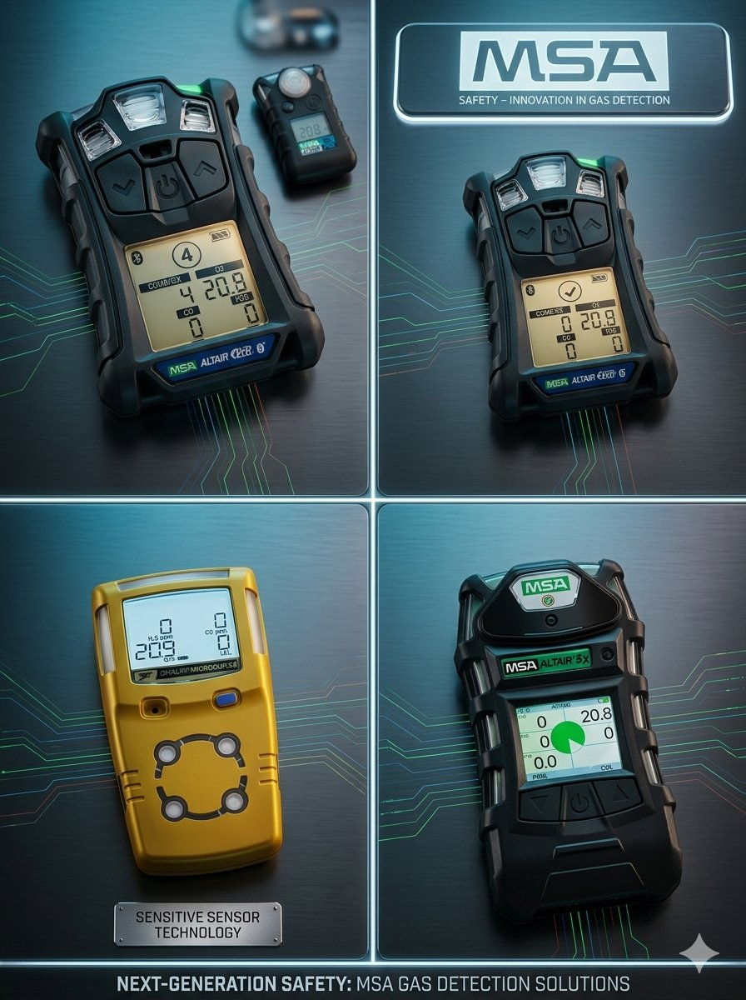

H₂S
Sulfuro de Hidrógeno
Monitoreo de presencia de H₂S en áreas donde existe riesgo de exposición a gases tóxicos.
GAS TÓXICOSoluciones para monitoreo de H₂S, CO₂, O₂ y gases combustibles o explosivos.

SOS4 SERVICES ofrece soluciones especializadas para la detección y monitoreo de gases en instalaciones industriales.
Contamos con servicios orientados a equipos para detección de H₂S, CO₂, O₂ y gases combustibles o explosivos.
Nuestro objetivo es contribuir a la prevención de riesgos atmosféricos, fortaleciendo la seguridad y confiabilidad de las operaciones.
Equipos diseñados para monitorear diferentes condiciones atmosféricas y riesgos presentes en la industria.
Monitoreo de presencia de H₂S en áreas donde existe riesgo de exposición a gases tóxicos.
GAS TÓXICODetección de concentraciones de dióxido de carbono en ambientes industriales.
MONITOREO ATMOSFÉRICOMonitoreo de niveles de oxígeno para detectar atmósferas deficientes o enriquecidas.
NIVEL DE OXÍGENODetección de gases y vapores combustibles o explosivos mediante monitoreo del LEL.
COMBUSTIBLE / EXPLOSIVOLa detección oportuna de gases permite identificar condiciones potencialmente peligrosas antes de que representen un riesgo para el personal, instalaciones o continuidad operativa.
Nuestros servicios pueden integrarse en diferentes entornos industriales.
Monitoreo de gases en instalaciones y operaciones petroleras.
Protección de áreas de proceso y zonas de operación industrial.
Soluciones para ambientes costa afuera y embarcaciones.
Verificación atmosférica antes y durante trabajos de riesgo.
Monitoreo de gases combustibles en zonas de riesgo.
Equipos para monitoreo y protección durante actividades operativas.
Consulta opciones de venta, renta o mantenimiento para las necesidades específicas de tu operación.